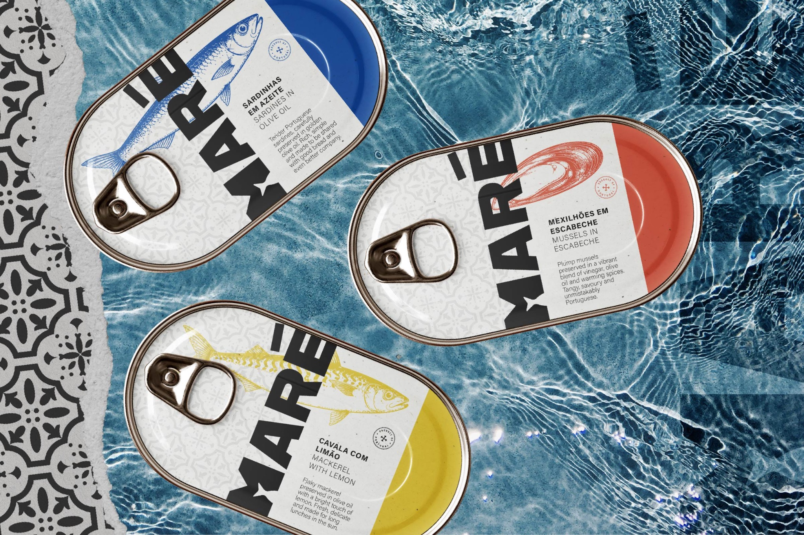
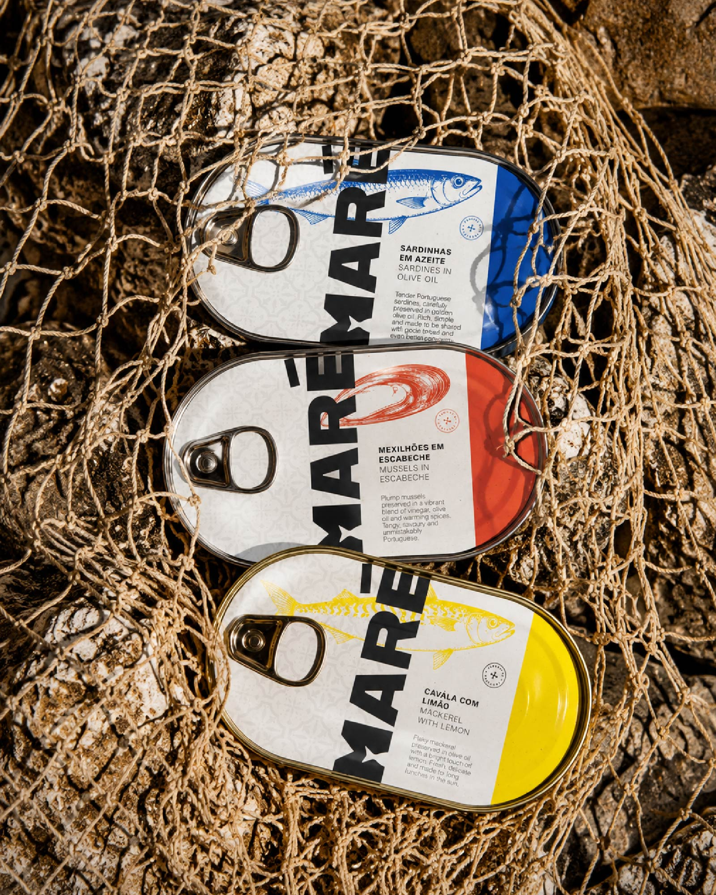
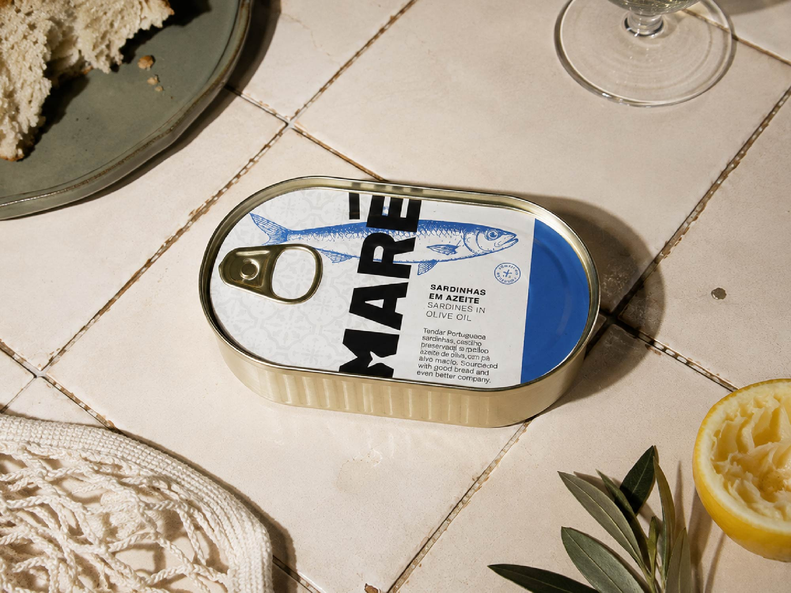
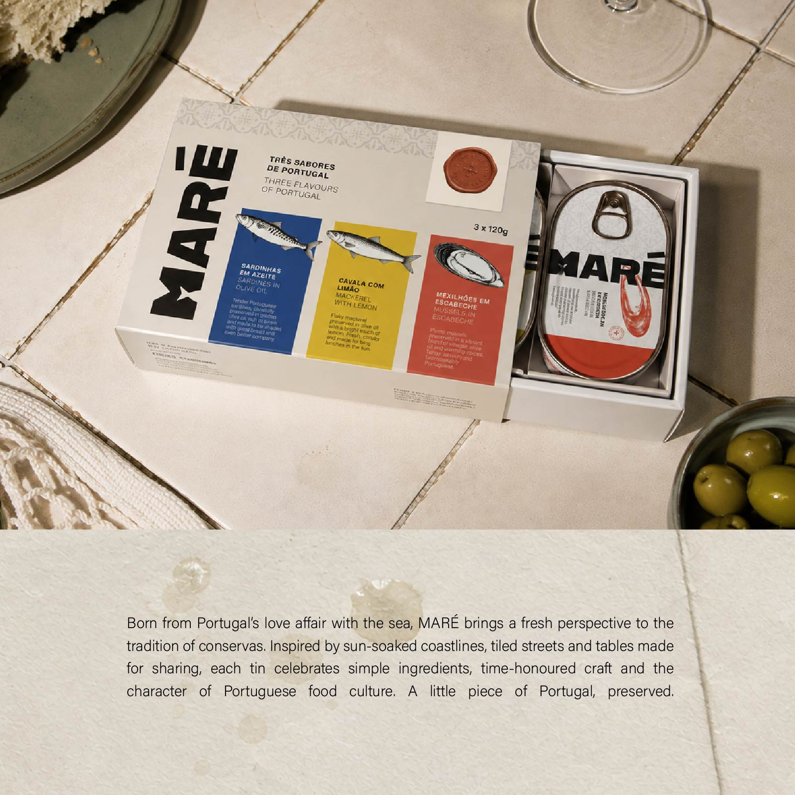

EXP-001 / MARÉ
SELF-INITIATED / 2026
SELF-INITIATED / 2026
Maré
A contemporary Portuguese conservas brand inspired by the colours, character and food culture of Portugal. MARÉ brings tradition into a more playful, collectible world through bold typography, illustrated seafood and colour-coded packaging.
BRAND IDENTITY
PACKAGING
ART DIRECTION
PACKAGING
ART DIRECTION


